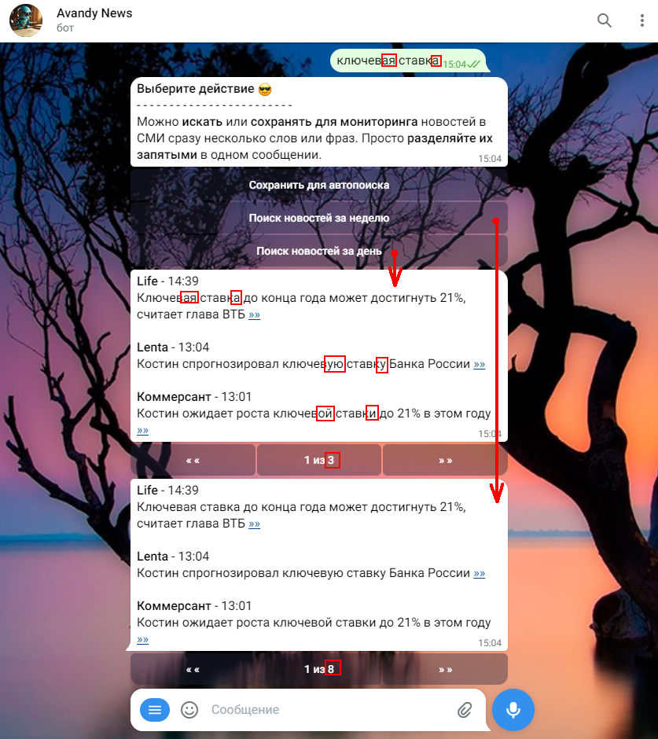

1. Поиск по сохранённым словам с применением символа *.
Можно сохранить до 64 слов включительно.
2. Пример поиска новостей по Топ 20 слов в СМИ.
После выполнения команды /top нажата кнопка Подробнее, а далее нажата кнопка с фамилией Собянин.
Можно нажимать на другие слова и новости будут появляться в том же окне. Очень удобно!
3. Поиск по фразе ключевая ставка, написанной в чат, и использование символа * для усиления поиска.
4. Поиск всех новостей с фильтрацией и добавление слов-исключений
для фильтрации заголовков при повторном поиске.
Слова-исключения можно писать не полностью - без окончаний, для более мощной фильтрации.
В /settings по команде /theme
можно выбрать одну из шести тем внешнего вида новостей
Пример темы номер 6 (время без даты, между новостями пустая строка и т.д.)